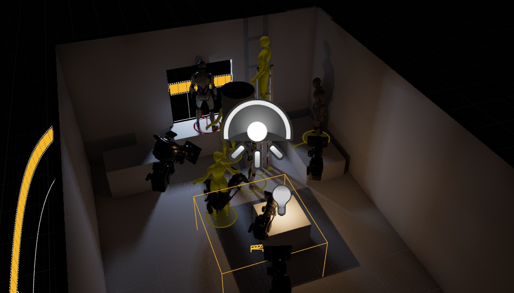
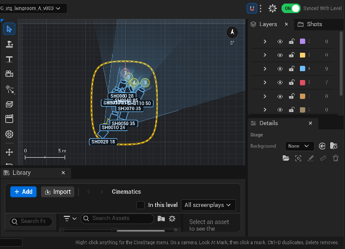
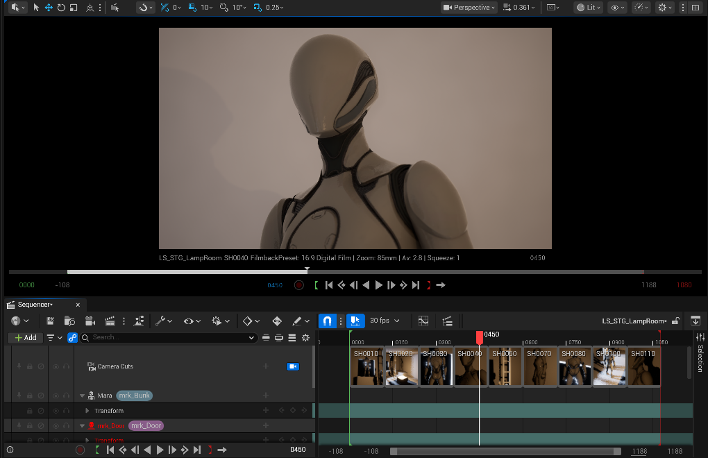

Framemark
Framemark is an Unreal Engine editor plugin for staging cinematics. One stage fences off the playing area, holds a mark for every character, owns the cameras and lights you place, and owns the Level Sequence. Move the stage and the whole scene moves with it, keyed animation included.
Contents
- Quick start
- Workflow
- Plan
- Stage and block
- Shoot and light
- Sequence
- Screenplay and Story Map
- Share and render
- Made to be learned quickly
- Good to know
- Documentation
Quick start
- Enable Framemark in Edit > Plugins and restart the editor.
- Choose Framemark in the Mode switcher. On the Home page, press Add Stage. The stage lands where the viewport is looking and gets a Player mark and an NPC mark.
- Choose Place Camera and click in the viewport. The camera aims at the nearest eye line as you place it.
- Fly to the framing you want, select the camera and press Set To Viewport.
- Open the Sequence page and press Build Sequence. Framemark creates the Level Sequence and opens Sequencer.
- Press Tab in the viewport to open the Quick Wheel. That is most of the tool.

Every button is one undo step.
Workflow
Six pages, in the order of the work: Plan (draw it top down), Stage (place marks), Block (cast and move), Shoot (cameras and lights), Sequence (build the shot list) and Share (export and render).

Plan
- 2D Planner that edits the same marks, cameras and lights as the 3D level
- Movement paths, grid and guide snapping, background picture
- Export the plan as PNG, SVG or PDF
Stage and block
- Marks with order, facing and role
- Ten ready layouts for two, three and more characters
- Setups, and a Marks Table for the whole cast
Shoot and light
- Fly to a framing, press Set To Viewport
- Lens list, shot scales, optional coverage preset
- Lights aim at the nearest eye line as you place them
- One click gives a character key, fill, rim and eye light
- One look for every shot, re-aimed at each camera cut
- Shot overrides that survive base look changes
Sequence
- Build Sequence makes the Level Sequence and a track per camera
- Key To Mark moves an actor from mark to mark
- Continuity tools between shots

Screenplay and Story Map
- Import Fountain, Final Draft, plain text, ink and articy:draft
- Generate stages from scenes, cast and props
- Write changes back to ink and articy
Share and render
- Export and import a stage as a file
- USD and FBX export with a change list before anything is applied
- Six Movie Render Graph templates
Made to be learned quickly
- Every button is one undo step
- Workspaces, Quick Wheel, editable toolbar
- English, French and Simplified Chinese interface
Good to know
Framemark is an editor plugin. The stage boundary, marks and labels are editor only, and nothing is added to your packaged game except the stage's runtime data.
Documentation
The manual covers one scene from plan to render, with every panel page, setting and companion plugin, plus a worked case study.